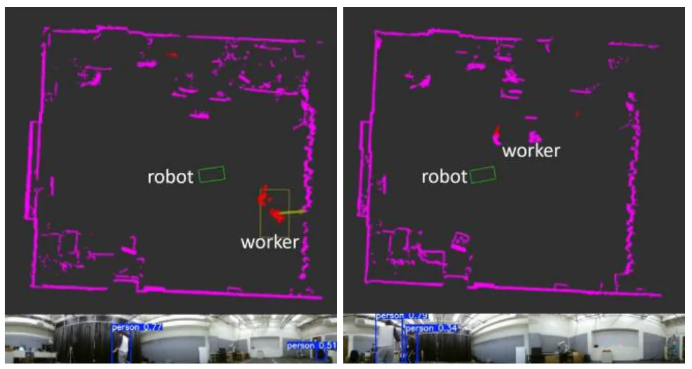
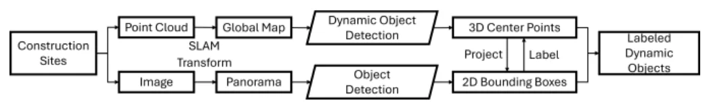
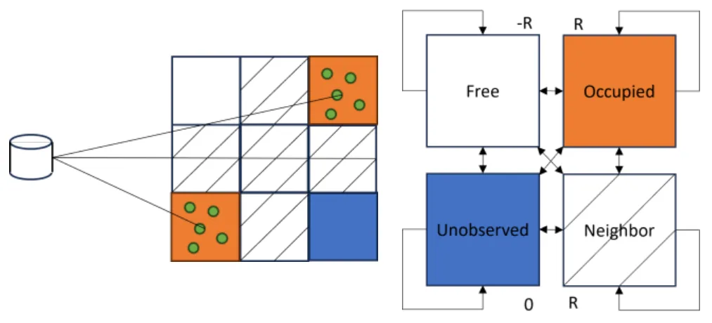
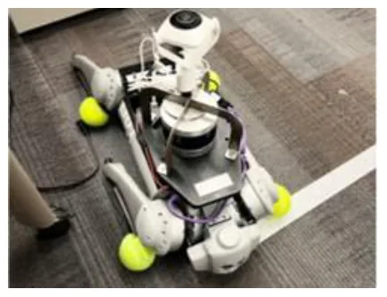
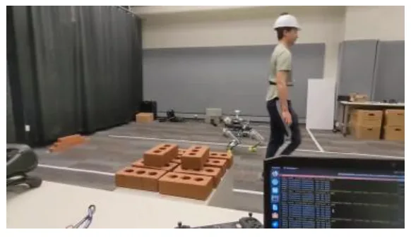

建筑场景动态目标检测与跟踪：鱼眼相机和 LiDAR 传感器融合模型Dynamic Object Detection and Tracking in Construction: A Fisheye Camera and LiDAR Sensor Fusion Model
偏工程短文，但与 LiDAR SLAM 前端动态点处理、传感器融合和移动机器人安全感知相关；算法新颖性有限，需看标定/同步和真实数据规模。
一句话工作总结
用 LiDAR 运动检测和鱼眼图像语义检测互补，提高施工场景动态障碍物跟踪鲁棒性。
摘要
该论文面向施工现场中的机器人动态目标检测与跟踪，提出将 LiDAR 点云/占据栅格的运动检测与上视鱼眼相机的语义检测融合。系统先在配准点云中识别运动物体，再把三维坐标投影到二维圆柱全景图，与实时图像检测结果对齐，并作为 Kalman filter 的观测更新。方法强调简单、实时和对动态/静态状态切换的鲁棒性，适用于四足机器人施工场景部署。
Robust dynamic object detection and tracking are essential for enabling robots to operate safely and effectively alongside humans in complex environments such as construction sites. While LiDAR-based SLAM and occupancy grid methods offer viable solutions for detecting and tracking motion, many state-of-the-art 3D vision approaches rely heavily on pre-trained neural networks and require additional post-processing to identify moving objects. Sensor fusion techniques, combining the precision of LiDAR with the semantic richness of RGB imagery, offer a promising alternative. In this work, we present a novel framework that enhances a quadruped robot equipped with a LiDAR sensor and an upward-facing fisheye camera for real-time dynamic object detection and tracking. After identifying moving objects within a registered point cloud, our method assigns semantic labels by projecting 3D coordinates onto a 2D cylindrical panorama, aligning with real-time image-based detections for observation update of the Kalman filter. The proposed system demonstrates high precision, simplicity, and robustness, particularly in handling objects transitioning between dynamic and static states, thus it is well-suited for deployment in real-world construction environments.
中文解读摘录
- 链接：https://arxiv.org/abs/2607.06896 ｜ PDF：https://arxiv.org/pdf/2607.06896
- 中文题名：建筑场景动态目标检测与跟踪：鱼眼相机和 LiDAR 传感器融合模型
- 关键信息：在四足机器人上融合 LiDAR 与上视鱼眼相机：先在配准点云/占据栅格中识别运动物体，再把 3D 坐标投影到圆柱全景图，与实时 2D 检测结果对齐并用于 Kalman filter 观测更新。
- 为什么值得看：论文较短、偏工程，但贴近真实施工现场动态障碍物检测；对 LiDAR SLAM 前端动态点剔除、语义辅助 tracking 和移动机器人安全感知有直接线索。
- 需要核查：动态/静态状态切换判据、LiDAR-camera 标定和时间同步误差、遮挡/多目标下的数据关联，以及是否依赖预训练检测器导致域外退化。
图表/页面预览

{kind=link}

{kind=link}

{kind=link}

{kind=link}

{kind=link}
